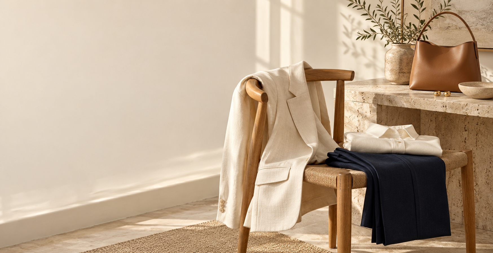

EMAIL 01 · Inmediato tras solicitar la guía
Asunto: Tu guía para empezar con lo que ya tienes
Preheader: Una checklist sencilla y cinco fórmulas de looks.
| NAREA |
 |
Tu guía para empezar con lo que ya tienesGracias por acercarte a NAREA. Aquí tienes tu guía de armario cápsula: una forma de revisar tus prendas, identificar lo que más usas y probar nuevas combinaciones. Empieza por un paso pequeño: elige tres prendas que te acompañen en una semana habitual. La guía te ayuda a construir a partir de ellas. Abrir mi guía |
| Muestra de email de una marca ficticia. No hay envíos reales. Volver al caso y ver la secuencia En producción: añadir identidad del remitente y gestión de preferencias / baja antes del envío. |